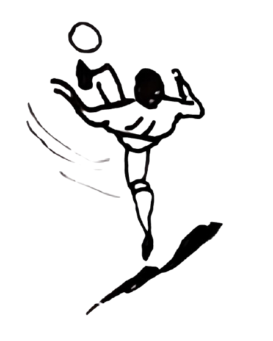

01
FULBO
una representación
del fútbol
→
COMENZAR EL PARTIDO
→
Si no podemos ver el acontecimiento, ¿Cómo podemos volver a él?
G
O
O
O
O
O
O
L

03
¿CÓMO RECORDAMOS LA JUGADA?
Una jugada pasa una vez. Pero podemos volver a ella de muchas formas.
¿Qué cambia cada vez que una jugada se representa?
→
SEGUIR LA JUGADA